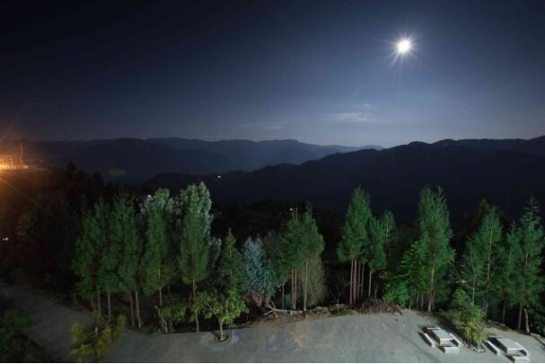

我们的征途，是星辰大海
项目老师简介
何骁也（2013-2015届项目老师，毕业于美国马里兰大学，项目结束后就职于百威英博）曾支教于云南省临沧市临翔区圈内乡昔木小学，任二年级的数学、美术、体育老师，并且还兼任负责计算机电器维护等工作。他信奉：知识就是力量，有知识的人就能统治全世界。也希望更多农村的孩子们能够从知识身上找到属于自身的力量，从内心充盈生命。作为”90后学霸”支教团的一员,曾接受过良好教育的他，深知书籍和知识对他的性格和人生观价值观的塑造的重要性，因此他和美丽中国的昔木团队一起完成了学校的图书馆建设、垃圾分类管理和盈利、校园广播站等项目。并且在大学学习商科的他，还给孩子们开设了商业资讯模拟课程，努力用学到的商业思维带领他们去理解数学问题，理解生活中的琐事。通过一些教科书上还有平时生活中可以接触到的实例去了解基础的商业模型和逻辑思维体系。在两年的支教实践中，他认识到乡村和城市的差距，发现了孩子们在见识上的不足，他也曾对“走出去的”的想法产生质疑，最终他提出“只有到更广阔的世界里 才知道自己需要什么”的想法，在教育的征途上勇往直前。
教育思考

二十年的差距
同为美丽中国项目老师的李小可桌上摆着一张印着卓依婷头像的明信片，学生送给她的。明信片上的那种大头像照片上一次见到应该还是我三四岁的时候看到的印在塑料口袋上的刘德华和郭富城。我笑着跟小可讨论说，你看，这是我们二十年前流行的东西。心里又想，这二十年，也许就是村里和城市里的差距吧。
上周周末临沧地区的年终晚会第一次邀请学生参加，我和另外四个美丽中国项目老师就一起带着学校的十个学生，准备去晚会上横扫千军扬我校威。凭借着学校老师26岁的平均年龄，学生自然也出落得青春活力精神十足甚至更甚于城里孩子。李晓亮在晚会上表演的还原魔方霸气十足技惊四座，十个小孩子的Edelweiss合唱也没有让人有丝毫失望。仿若真的是横扫千军了。
何老师所教的孩子们
就如同长久以来我一直觉得他们所见所闻其实一点都不逊于城里孩子一样，在下台时还懂得绅士淑女般鞠躬说Merry Christmas and Happy New Year.
直到我带着他们去超市的时候，走到电动扶梯跟前，有三个小孩子问我应该怎么上去这个扶梯。在学会上扶梯之后他们激动地跑上跑下。这是我第一次发现，原来他们所见的并不如城市里的孩子见到的多，就算我们带去的也都是冰山一角。就像当初给他们看上海中心大厦的纪录片里提到了六百多米的上海中心大厦他们问我学校教学楼多高，我说差不多十五米吧，他们一脸的错愕。
走出去的疑惑
从临沧回来之后，唐德杰跟我说他很苦恼。我问他苦恼什么。他说去看了城里的中学之后再也不想以后去乡里的中学读书了。我笑说你肯定能考上城里的中学啊，担心什么。他说就算考不上也不去读乡里的中学了。我顿时感到莫大的压力。平时上课的时候，我就总跟他们说，你们一定要走出去，不管是读书还是打工还是怎么样，有机会总要拼一拼。可能他们好多人自己也不明白，为什么一定要走出去。就像我人人网一个朋友也跟我说过，美丽中国凭什么一定要让小孩子考出好成绩，我们凭什么一定要觉得走出去是好的。人不是就应该分成三六九等，就是有人应该做这些事情么？每当听到这些疑问我都很愤怒，但是细下想想，为什么一定要走出去呢？
马斯洛需求层次理论中最基础的便是生理需求和安全需求。我们现在所做的更大范围的是为学生解决之后的生理需求和安全需求，让他们能够自己养活自己，数学学不好，算账都会被人骗，语文学不好连银行填表都不会。这些东西是最基础的，也是为什么美丽中国如此强调分数的一个原因吧。再往上，就是对情感的需求。这一块其实是很缺失的，因为我们班也有好多小孩觉得自己的父母不够重视自己，觉得自己的存在可有可无。说到这里依然没有提到为什么一定要走出大山。因为自己的存在感其实在山里也是能够实现的。大山所包围的世界但是现在我就想反问那些质问我的人：“你凭什么就觉得他们应该止步于第三层次了呢？凭什么人都是要分成三六九等呢？汉人有才者，匹夫可以为宰相。”我常给他们说，你们一定要做到不要让人瞧不起。就像小时候妈妈一直在教我不要惧怕任何人和事。“天地玄黄，宇宙洪荒。哪怕他铜墙铁壁，哪怕他皇亲国戚。”然而，他们真正明白尊严是什么吗？我常给他们说要尊重他人尊重自己，也在身体力行地做着。尼采也曾经说过：“鄙薄自己的人，却因此而作为鄙薄者，尊重自己。”但是这些东西对他们来说意义是什么？他们真的需要么？就像那些质疑我和质疑美丽中国的人说提出的一样。第四层次的尊重和第五层次的自我实现对他们来说真的是必需的么？

到更广阔的世界里 才知道自己需要什么
一切问题归咎到这里，都是一个子非鱼的故事。其实质疑的声音很容易被击倒。机会和选择。没有出生在大山里的人或者没有真正与这些孩子深入接触过的人是不能意识到机会和选择的差异的。我们拥有应该拥有的一切，自然不用考虑第四层次第五层次是不是我们所需要的，我们可以选择不要，也可以选择去获得，因为我们知道这些东西的存在，那些都是触手可及的。然而山里的学生根本不能接触到我们所接触的世界和机会，他们所选择的自我实现的范围是局限的。只有走出去，才能有更多的选择和机会。不是说美丽中国的老师希望把自己的世界观强加到学生身上，让他们一定要走出去。而是希望让他们有机会能走出去，去和一个城里的孩子一样站在一个平台上去选择去或留。甚至这些都是多余的，为什么一定要走出去呢？因为人不就应该去探索么？当你知道这个社会的复杂，就不会轻易去褒贬。前段时间中国的登月车终于在月球上行走了。有人说这么多人没吃饱，为什么还要发展航天事业。这个问题不就跟为什么一定要从大山里走出去是一样的么？只有到更广阔的世界去探索，才能知道我们真正需要什么，才不让自己永远禁锢在自我封闭的囚牢里。
往回看的时候发现，其实我曾经的想法和前面提到我驳斥的人的想法是相似的，但是当我真正接触到了这些现实，才明白我是错的。对，我曾经是错的，没有可以商量的余地。似乎真是美丽中国给了我一个这样的平台，让我审视自己，不断在征途上前行。
我们的征途，是星辰大海。